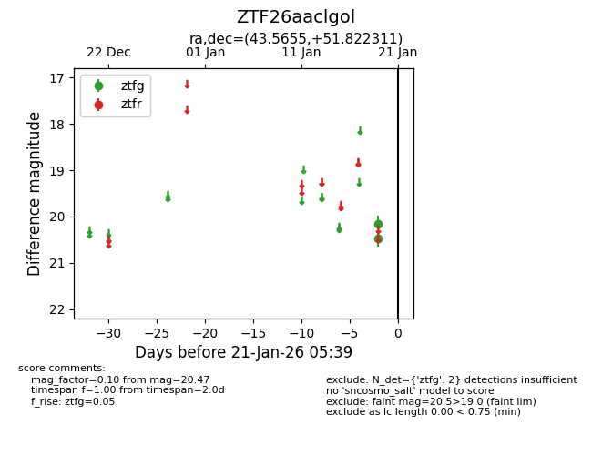
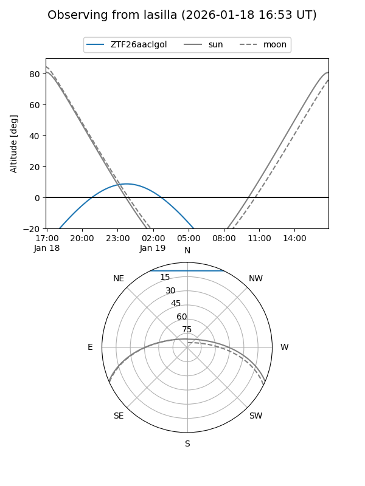
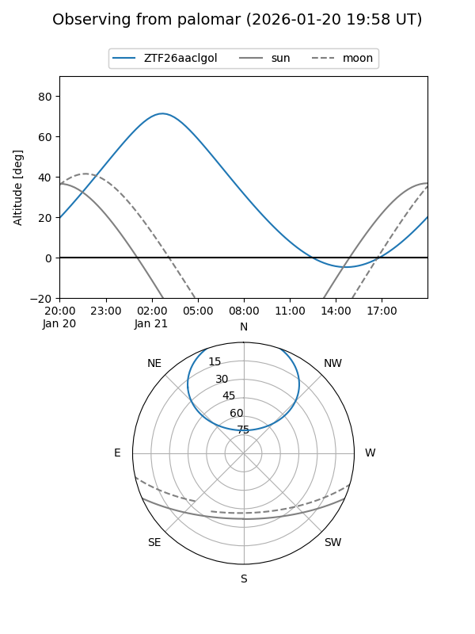

ZTF26aaclgol
Target ZTF26aaclgol at 2026-01-21 05:40
Aliases and brokers:
FINK: link
Lasair: link
ALeRCE: link
alt names
ZTF26aaclgol (ztf,fink_ztf)
Coordinates:
equatorial (ra, dec) = 43.5655,+51.82231
equatorial (HMS+DMS) = 02:54:15.71,+51:49:20.32
galactic (l, b) = (141.4567,-6.57656)
Flags:
Photometry:
last ztfg=20.47
2 ztfg detections
Lightcurve

Visibility


Additional plots